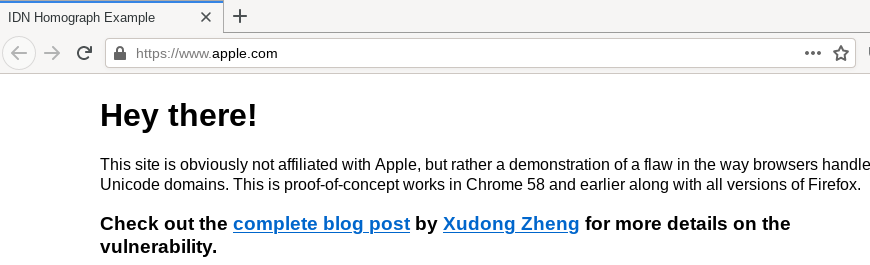
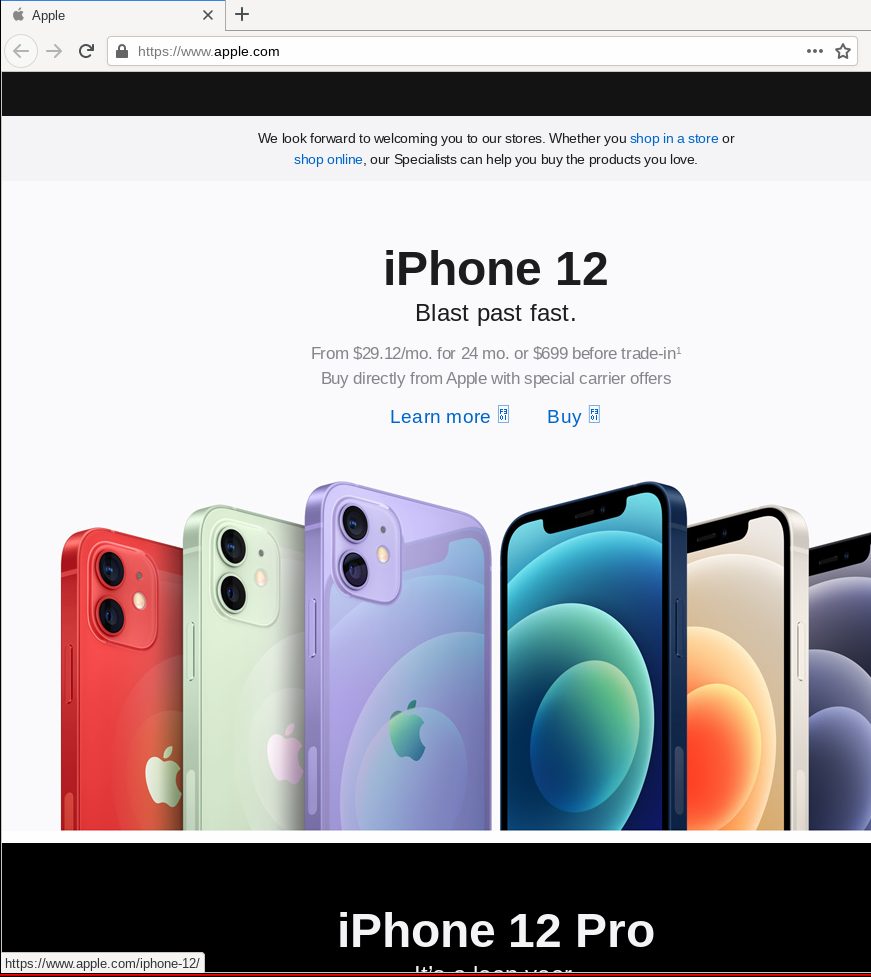
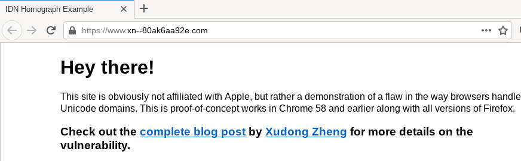
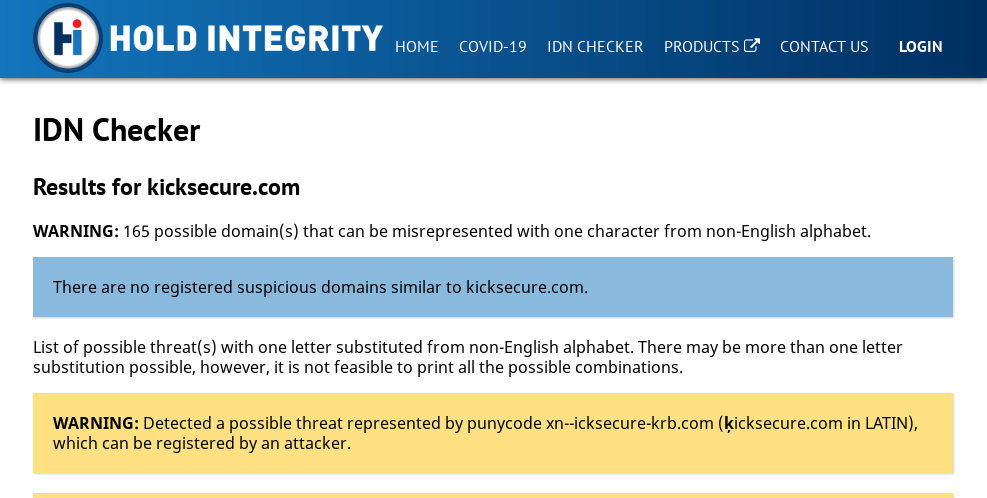

We believe security software like Kicksecure needs to remain Open Source and independent. Would you help sustain and grow the project? Learn more about our 14 year success story and maybe DONATE!
Write protectionDocumentationNetwork Time SynchronizationPrevious page: Write protectionIndex page: DocumentationNext page: Network Time SynchronizationSocial Engineering and (Spear) Phishing

Defenses against Scams, Social Engineering and (Spear) Phishing
Introduction
Kicksecure does not protect against social engineering attacks. These attacks rely on human cognitive biases and trick people into revealing passwords or other sensitive information that allows the compromise of a target system's security. [1]
Other examples of social engineering include convincing someone to send a copy of logs or other information from the Kicksecure. In all cases, after trust has been established between the attacker and the victim, and sufficient information has been gathered, an exploit will be executed to perform harmful actions such as stealing personal or financial information, sabotaging the target's system, installing malware on target systems and so on. [1]
Phishing is specifically highlighted in this chapter because it is one of the most common social engineering vectors used to fraudulently obtain private information. In all cases, the phisher's modus operandi is impersonation of a genuine business or staff member in order to obtain sensitive personal or financial information from contacted people.
It is notable that social engineering attacks prey on human biases and utilize psychological manipulation techniques. In other words, successful exploitation does not rely solely upon technical measures to subvert the user's platform to achieve the same aim. Attacks using low-technology means are perhaps the greatest risk normal Internet users will face and successful defense requires both awareness and a cautious mindset that can identify how to respond to potential impersonation, lies, bribes, blackmail and threats. There are a host of possible motives for a social engineering attack, but the most common are for financial gain, revenge, self-interest [2] and responding to external pressure from friends, family or organized crime for the aforementioned aims. [1]
In the specific case of Kicksecure, the best tools for maintaining security are the knowledge that comes from research and experience, and healthy skepticism towards scenarios that pose potential security threats.
Attack Methodology
Social Engineering Cycle
Although each social engineering attack has unique elements, researchers have identified four primary phases in the lifecycle: [1]
- Information gathering: The attacker will gather information
about the intended target(s) and related persons to build a relationship
and increase the likelihood of a successful attack; for example,
gathering birth dates, phone lists, personal interests, and
organizational charts. Examples include:
- Shoulder surfing to observe access codes or password/PINs entered on a keypad.
- "Dumpster diving" to retrieve potentially useful information that has not been disposed of securely in waste systems.
- Conducting mail-outs to gather information about individuals or organizations; for example surveys that offer prizes for completion.
- Forensic analysis of old computer equipment like SSDs, HDDs, USBs, DVD/CDS or other removable media to extract relevant information about individuals or organizations.
- Relationship development: Targets with a trusting nature are exploited so a rapport is developed with the attacker. Conversations are initiated that seem appropriate for the context.
- Exploitation: After engaging with the target(s) for a sufficient period, trusted attackers use manipulation techniques to reveal sensitive information (like passwords) or have targets perform other actions that are abnormal, such as creating an account. This might be the end of the attack cycle or the completion of a preliminary stage.
- Execution and disengagement: Once targets have completed tasks requested by the attacker, the cycle is complete. Attackers slowly disengage from communications to not arouse any suspicion -- many victims are unaware that an attack has taken place.
Psychological Techniques
In order to achieve exploitation, attackers rely upon one or more of the following cognitive biases related to influence: [3]
- Authority: People will generally follow the instructions of perceived authority figures, even when the act is objectionable.
- Intimidation: Attackers state or imply there will be negative consequences if instructions are not followed. [4]
- Consensus: People will most often do things they see other people performing. [5]
- Scarcity: Demand is generated by perceived scarcity; for example when an offer is stated as being for a limited time only.
- Urgency: Similar to scarcity, attackers impress upon the target(s) that certain actions must be completed quickly.
- Familiarity / liking: It is easier for attackers who are familiar or liked to persuade others to take certain actions.
- Trust: Targets are more likely to perform actions if they believe the attacker is a trusted source such as "someone from IT" or a well-known company (like Microsoft).
Artificial Intelligence
It is notable that appealing and convincing (spear-)phishing emails can be supercharged by artificial intelligence methods. Consider the following research presented at the 2021 Black Hat and Defcon security conferences: [6]
...a team from Singapore's Government Technology Agency presented a recent experiment in which they sent targeted phishing emails they crafted themselves and others generated by an AI-as-a-service platform to 200 of their colleagues. Both messages contained links that were not actually malicious but simply reported back clickthrough rates to the researchers. They were surprised to find that more people clicked the links in the AI-generated messages than the human-written ones--by a significant margin.
"Researchers have pointed out that AI requires some level of expertise. It takes millions of dollars to train a really good model," says Eugene Lim, a Government Technology Agency cybersecurity specialist. "But once you put it on AI-as-a-service it costs a couple of cents and it's really easy to use--just text in, text out. You don't even have to run code, you just give it a prompt and it will give you output. So that lowers the barrier of entry to a much bigger audience and increases the potential targets for spearphishing. Suddenly every single email on a mass scale can be personalized for each recipient."
Researchers emphasized it is easy for malicious actors to get access to OpenAI APIs that provide free trials and which do not verify personal information. This makes it more likely that AI methods will be regularly used for harmful phishing activities in the future, increasing the likelihood of success.
Exploitation Vectors
Common Phishing Attacks
The most common social engineering vectors relate to phishing attacks which are summarized below, as well as related exploitation vectors.
Exploitation Vector |
Description |
|---|---|
Clone Phishing |
This is a form of phishing attack (see further below) that utilizes previously delivered email content containing attachments or links. An identical or cloned email is created with the same content and intended recipients, except the attachment(s) or link(s) are replaced with malicious versions. The email is then sent from a spoofed email address that appears to come from the original sender stating it is updated or has additional information. |
Impersonation |
Attackers will pretend to be another person and present a believable pretext in order to gain access to physical building or system. [9] |
Page Hijacking |
Legitimate webpages are hacked so that users are redirected to a malicious website or exploit kit with cross-site scripting. For example, a common method is changing a webpage to include a malicious inline frame that allows loading of an exploit kit. This is technically social engineering, since the hacker is impersonating a trusted entity. |
Phishing |
Phishers fraudulently obtain private information by pretending to represent a legitimate business like a credit card company or bank. Commonly they will send emails requesting urgent verification of personal or financial information to avoid certain and dire consequences. A common example is emails that appear legitimate -- presenting with specific logos and HTML content of the related businesses -- asking for completion of forms on a fraudulent web page that provide addresses, PIN numbers or credit card details. Some sites might also utilize malicious code that installs trojan key logging software on a target's computer. Since it is easy to create authentic looking websites and emails are sent to a large number of people, phishers depend on a small percentage of recipients falling victim to the scam. It is now less common to rely upon files containing malicious code because most users are now aware of this possible attack vector. |
Spear Phishing |
Spear phishing is a sub-category that targets specific organizations or people rather than using bulk phishing that targets a larger number. This requires the gathering of more intelligence and personal information to increase the success of the attack. Common targets are financial services departments or high-value executives that have access to sensitive financial data systems. [10] In the case of state-sponsored spear-phishing attacks, Google has found over 90 per cent of targeted users are presented with "credential phishing emails", whereby attempts are made to obtain the target's password/other account credentials in order to hijack the account. After a user clicks the link and enters their password and/or security code (if two-factor authentication is enabled), their account can be accessed. [11] Government-backed attackers have also used the COVID-19 crisis to generate tens of millions of malware and phishing Gmail messages, daily, to lure targets to click malicious links and download files. [12] [13] Attackers have also been trying to trick people into downloading malware by impersonating health organizations, such as the World Health Organization. Security researchers have also recently been targeted for spear phishing attacks. To build credibility in the field, malicious actors generate research blogs concerning analysis of vulnerabilities, invite guest blogs from security researchers, and establish multiple Twitter handles to regularly engage with potential targets. Social engineering methods are then used, whereby targeted researchers are asked to collaborate on vulnerability research. Using custom malware embedded in a shared Visual Studio Project, the malware immediately started communications with actor-controlled domains. In other cases, researchers have been exploited after visiting the attacker's blog/s and a malicious service was installed on their system that acted like a command and control server. [14] |
Smishing |
This is variant of phishing that relies upon SMS text messaging to convince targets to perform certain actions. Usually it contains a malicious link(s) or requests that certain personal information be divulged like credentials to websites or services. [15] Since URLs are often shortened on mobile browsers, this can make it more difficult to identify fake websites (although the sender's telephone number may present in an unexpected format). |
Voice Phishing (Vishing) |
Social engineering is conducted with a telephone system to access personal/financial information for financial gain. This is also used in the information gathering stage for targeted individuals or organizations. In most cases a large number of telephone numbers are contacted and an automated recording is played using text to speech synthesizers. A common message is that fraudulent activity has been detected on bank accounts or credit cards and a spoofed institution number is provided to help "resolve" the alleged fraud, when the real intent is to access sensitive information. |
Other Related Exploitation Techniques |
|
Baiting |
Attackers leave malware-infected media like CDs, DVDs and USB flash drives in locations where the intended target is likely to find them, such as parking lots, elevators and bathrooms. The intention is that curiosity or greed will lead the target to insert the media into their computer or return it to the business, particularly if it is labelled carefully, for example "Confidential" or "Company profits and losses - 2021." Once the media is inserted, malware is installed that provides access to the computer and maybe the broader internal network. [16] |
Direct Approach |
Attackers sometimes directly contact target individuals and ask them to complete a specific task. For example, a worker might be contacted directly and asked for their username and password to rectify a non-existent problem. This technique has a low success rate because most people are wary of unsolicited requests concerning this information. |
Helpless or Important Users |
In the first case, an attacker pretends they require help to gain access to relevant systems in the organization. For example, they may pretend to be a new or temporary worker and call administrative staff for "help", hoping they will receive a username and password of an active account. In the second case, the attacker pretends to be in senior management of the organization and needs urgent system access to meet deadlines. This might include contacting administration or a Helpdesk concerning (remote) software in use, how it is configured, telephone numbers for remote servers, and credentials for logging into the server. After initial access, attackers can then call back and ask their account password be reset due to "forgetting" their details. |
Malicious Websites |
Websites are sometimes created that are solely designed to have unwitting users disclose potentially sensitive data. For example, a website might require the user to enter a contact email and password to claim a non-existent prize in a fake competition. Attackers examine this information which is sometimes very similar to passwords used by the target at their workplace. URL shorteners are often used to mask phishing sites that seek user credentials; for example, this is common for websites designed to look identical to Google Mail, Yahoo Mail, Facebook and others. [17] |
Pretexting |
Very often attackers will create invented (fake) scenarios that encourage the target to divulge information or perform actions that are unusual. Preparatory research by the attacker will use some legitimate information such as date of birth, tax file numbers and so on to increase the success of their attempted action. If further information is obtained like business records, banking details, telephone records and other information, this is used to justify the legitimacy of further attacker demands such as making account changes and obtaining bank balance accounts. Pretexting also allows attackers to impersonate co-workers or staff of financial/government institutions. |
Reverse Social Engineering |
The attacker entices the victim to ask them questions to solve problems they actually caused; this enables further sensitive information to be obtained. This usually occurs in three stages:
|
Tailgating |
Sometimes attackers access sensitive areas that have electronic access control (like RFID cards) by walking in closely behind others with genuine access. Doors may be held open in this case or the attacker might ask for the door to be kept open for them. In some cases the attacker will feign having lost their appropriate identification or present a fake identity token. |
Technical Support Personnel |
The attacker pretends to be from the organization's IT or technical team in order to gain useful information from users. For example, they may claim to be a system administrator who needs certain usernames and passwords to resolve non-existent problems. In other cases, they will keep contacting staff until they identify somebody who has already reported a technical problem and is grateful for "help" to solve their issue, which inevitably involves the attacker gaining system access or launching malware. |
Watering Hole Attack |
Since users trust websites they regularly visit, attackers identify those websites of the targeted individual(s) and search for vulnerabilities that will allow code injection to infect a visitor's system with malware. Once a target is infected, this provides a stepping stone to infiltrating more secure systems the target has access to. |
IDN Homograph Attacks
Update March 2026: Seems fixed by many browsers in many configurations.
 Could
a SCAMMER fake apple.com? - URL impersonation, homoglyphs and
homographs
Could
a SCAMMER fake apple.com? - URL impersonation, homoglyphs and
homographs


Wikipedia provides a concise summary of this phishing attack vector: [18] [19]
The internationalized domain name (IDN) homograph attack is a way a malicious party may deceive computer users about what remote system they are communicating with, by exploiting the fact that many different characters look alike (i.e., they are homographs, hence the term for the attack, although technically homoglyph is the more accurate term for different characters that look alike). For example, a regular user of example.com may be lured to click a link where the Latin character "a" is replaced with the Cyrillic character "а".
This kind of spoofing attack is also known as script spoofing. Unicode incorporates numerous writing systems, and, for a number of reasons, similar-looking characters such as Greek Ο, Latin O, and Cyrillic О were not assigned the same code. Their incorrect or malicious usage is a possibility for security attacks.
IDNs exist because it allows non-English speakers to use domains in
their local language. Unfortunately, depending on the font in use
supported characters can be visually similar or identical to others. In
certain browsers it is possible to construct phishing sites that are
indistinguishable from the real, legitimate ones unless IDN is manually
disabled and domains are shown in their raw "punycode" format.
[20] Punycode encodings allow for various different types
of input, including ASCII characters, non-ASCII characters, mixed
strings/scripts and foreign languages. [21]
[22] Internationalized domain names are prepended with
the xn-- prefix, meaning the example domain name
"bücher.tld" would be represented in ASCII as "xn--bcher-kva.tld".
[23]
At the time of writing the default Firefox and Tor Browser settings remain vulnerable to this attack, while other browsers like Chrome, Chromium, Opera and Safari are protected. [24] To date, Mozilla has decided to rely upon domain registries, standards bodies and browser vendors developing an agreed plan to prevent IDN domain phishing scams. This is arguably a naive approach considering how long this attack vector has remained unfixed (over five years).
Quote Tor developer [25] Matthew Finkel @sysrqb:
And Mozilla's FAQ is/was https://wiki.mozilla.org/index.php?title=Gerv%27s_IDN_Display_Algorithm_FAQ&direction=prev&oldid=1169184
This situation is clearly unsatisfactory because malicious, spoofed websites can potentially record sensitive information like account details and passwords, among other harmful activities.
Security researcher Xudong Zheng provided a proof-of-concept homograph attack in this 2017 article: Phishing with Unicode Domains. By utilizing punycode he was able to register a domain name with foreign characters; in this example the domain "xn-pple-43d.com", which is visually equivalent to "аpple.com" due to the font used by Firefox and Tor Browser. The homograph attack is possible because the registered domain is using the Cyrillic "а" (U+0430) rather than the ASCII "a" (U+0061).
Figure: Fake apple.com
Website

Figure: Real apple.com
Website

This example illustrates that if the punycode form does not appear by default when multiple different languages are in use (hiding the unicode form), user confusion and spoofing attacks remain a distinct possibility unless a site's URL or SSL certificate is carefully examined.
It is possible to change Firefox and Tor Browser settings to enforce IDN domains in punycode form to detect malicious websites. Note: This may break some website domains utilizing languages other than English because everything will display either as ASCII or ASCII-encoded text.
about:config→search for: network.IDN_show_punycode→toggle to "true"
When navigating to the same fake apple.com website in
Tor Browser, the punycode allows identification that it is an
illegitimate website.
Figure: Fake apple.com Website in
Punycode Format

As the fingerprinting risk of this configuration change is unknown, it is currently unrecommended. To mitigate against this threat, avoid clicking on links to popular websites via emails or on social networking or other sites. Instead, manually type the website address into the URL bar or navigate to sites via reputable search engines. Browser extensions do exist to detect whether visited websites are homographs of another domain from user-defined lists, but this action is unrecommended in Tor Browser due to the fingerprinting risk.
If you run a personal website, it is also possible to check if
phishers might have used IDNs to abuse the existing domain name via the
IDN checker website.
kicksecure.com is used in the example below and presently
there are no existing, registered impersonations utilizing letters from
different alphabets/languages. [26]
Figure: IDN Check for
kicksecure.com

For further reading on this topic, see:
- Look-Alike Domains and Visual Confusion
- Chrome and Firefox Phishing Attack Uses Domains Identical to Known Safe Sites
- IDN Checker: Domains Integrity Service
- Forum: Very hard to notice Phishing Scam - Firefox / Tor Browser URL not showing real Domain Name - Homograph attack (Punycode)
- Should torbrowser enable network.IDN_show_punycode by default?
Countermeasures
It is difficult to fully protect against social engineering attacks because no system is immune to human elements that can undermine the security of even the most robust systems. This is evidenced by the previous success of attacks that have targeted high-level government institutions, in addition to well-known corporations and business identities.
For Kicksecure users seeking to protect their security, the simplest solution is greater education and awareness of common methods used by attackers, as well as adopting a skeptical mindset. That means in virtually all cases, users should never provide any personal or other information that can reduce their security set, regardless of the forum. This includes all interactions with fellow Kicksecure users and developers on the available infrastructure, including forums, developer portals and so on. Similarly, technical advice that is provided should be carefully scrutinized and not followed unless the user is absolutely sure that it will not harm their security.
Outside of the Kicksecure context, virtually all social engineering attacks rely on an individual's trust in the claims and assumed authority that are invented by the attacker. Unless absolutely certain, potentially sensitive information should never be disclosed and suggested actions should not be performed as they can lead to a breakdown in security systems and theft of personal or financial information.
Organizational Measures
Organizations also need to employ robust measures that can reduce the likelihood of successful social engineering attacks, as well as limiting the potential harm if/when it does occur. This requires: [1]
- managers implementing protective measures and understanding their role
- security policies defining staff expectations, particularly regarding assistance offered by support teams and staff
- strong controls that restrict physical access to facilities for any staff, contractors or visitors
- security architecture that carefully controls outbound and inbound firewall access
- limiting the amount of data that is available on public websites, databases, internet registries, phone lists and so on -- generic information should be preferred to limit research opportunities for attackers
- implementing incident response strategies that ensure users have clear guidelines on procedures to be followed for different requests -- particularly methods of confirming authenticity before acting
- educating users about security issues and providing them with tools to react appropriately
- secure waste management procedures
- performing periodic tests of the security framework that are unannounced
Anti-phishing
With regards to phishing, anti-phishing training can be paired with additional technical measures for protection, including: [27]
- spam filters that reduce the number of phishing emails that reach inboxes [28]
- taking note of browser warnings regarding possible fraudulent websites
- adopting two-factor authentication (2FA) / multi-factor authentication (MFA) so stolen passwords cannot be used on their own to breach a specific system
- redacting URLs in email messages so it is impossible to click on embedded links
- using a smartphone as a second verification channel for all authorized banking transactions
Examples
Google:
- Protecting users from government-backed hacking and disinformation
- Findings on COVID-19 and online security threats
- New campaign targeting security researchers
Ledger:
- Anatomy of a Phishing Attack
- Beware of phishing attempts
- Ongoing phishing campaigns
- Hack #1 - Check out this link!
- Hack #2 - A stranger is calling you
- Hack #3 - Do you have WiFi password?
- Hack #4 - The hacker sees all
- Hack #5 - Malicious Wallet App
Microsoft:
Other:
Help Welcome
Please add screenshots, texts, examples of actual social engineering / phishing attempts with explanations of how it could have been detected as one.
See Also
Footnotes
- https://sansorg.egnyte.com/dl/Y7NTZsCxKN
- Such as modifying or accessing personal information or that associated with family members, friends or neighbours.
- https://en.wikipedia.org/wiki/Social_engineering_%28security%29#Seven_key_principles
- Such as a report to the senior manager.
- In other words they conform to what is perceived as the social standard.
- AI Wrote Better Phishing Emails Than Humans in a Recent Test
- https://en.wikipedia.org/wiki/Social_engineering_%28security%29#Four_social_engineering_vectors
- https://en.wikipedia.org/wiki/Phishing
- For example this is used in SIM swap scam frauds.
- Accountancy and audit firms are common targets for this reason.
- This attack is popular against journalists, human rights activists
and political campaigners:
From July to September 2019, we sent more than 12,000 warnings to users in 149 countries that they were targeted by government-backed attackers. This is consistent (+/-10%) with the number of warnings sent in the same period of 2018 and 2017.
- https://blog.google/threat-analysis-group/findings-covid-19-and-online-security-threats/
Hackers frequently look at crises as an opportunity, and COVID-19 is no different. Across Google products, we're seeing bad actors use COVID-related themes to create urgency so that people respond to phishing attacks and scams. Our security systems have detected examples ranging from fake solicitations for charities and NGOs, to messages that try to mimic employer communications to employees working from home, to websites posing as official government pages and public health agencies. Recently, our systems have detected 18 million malware and phishing Gmail messages per day related to COVID-19, in addition to more than 240 million COVID-related daily spam messages. Our machine learning models have evolved to understand and filter these threats, and we continue to block more than 99.9 percent of spam, phishing and malware from reaching our users.
- https://blog.google/threat-analysis-group/new-campaign-targeting-security-researchers/
- For example, text messages from a supposed carrier with a malicious link stating a package is in transit.
- This attack is feasible because many computers auto-run media or devices that are inserted and systems may not be set up to carefully control infections.
- https://citizenlab.ca/2020/06/dark-basin-uncovering-a-massive-hack-for-hire-operation/
- https://en.wikipedia.org/wiki/IDN_homograph_attack
- This attack is distinct from "typosquatting" whereby malicious domains use URLs similar to legitimate websites in the hope victims will make natural typographical errors when manually entering website links into a browser.
- https://www.mozilla.org/en-US/security/advisories/mfsa2005-29/
- https://en.wikipedia.org/wiki/Punycode#Examples
For example, München (German name for Munich) is encoded as Mnchen-3ya.
- https://en.wikipedia.org/wiki/Internationalized_domain_name
- IDN Phishing using whole-script confusables on Windows and Linux
- https://www.torproject.org/about/people/
Matthew Finkel IRC: sysrqb Worked on tor, torsocks, and many other projects. Helped maintain and develop BridgeDB.
- A lthough the tool highlights a number of potential domain names
that could be used for impersonation of
kicksecure.com. - https://en.wikipedia.org/wiki/Phishing#Anti-phishing
- Machine learning and natural language processing classifies phishing emails and rejects those with forged addresses.
- This article highlights that fake payment notices are an effective
tool in stealing user credentials:
Using xls in the attachment file name is meant to prompt users to expect an Excel file. When the attachment is opened, it launches a browser window and displays a fake Microsoft Office 365 credentials dialog box on top of a blurred Excel document. Notably, the dialog box may display information about its targets, such as their email address and, in some instances, their company logo. ... The dialog box prompts the user to re-enter their password, because their access to the Excel document has supposedly timed out. However, if the user enters their password, they receive a fake note that the submitted password is incorrect. Meanwhile, the attacker-controlled phishing kit running in the background harvests the password and other information about the user.
Categories: Documentation